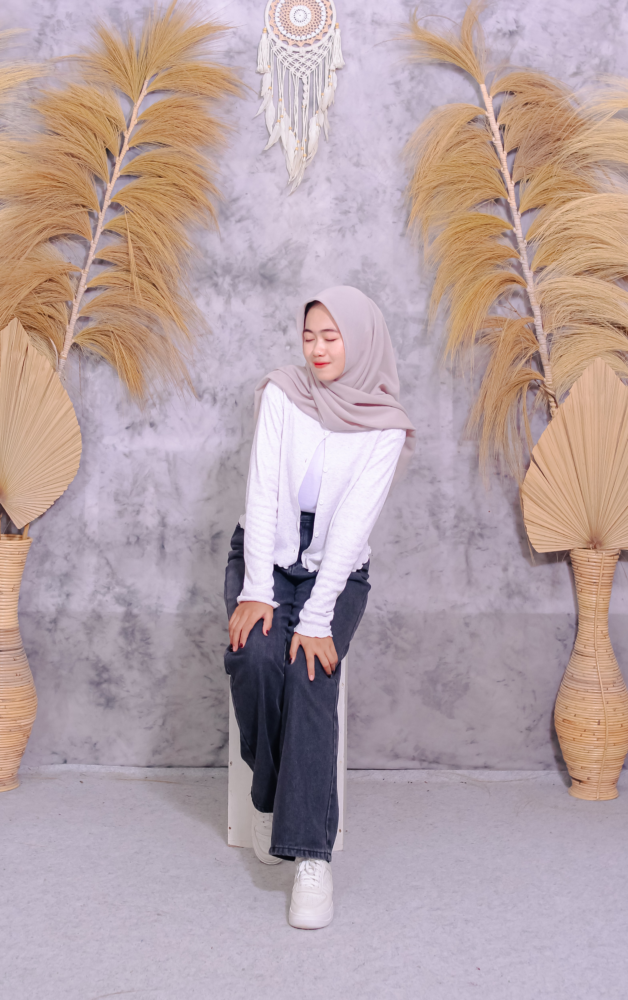

Biodataku
Hallo namaku Julia Safitri biasa dipanggil Julia, aku lahir pada tanggal 16 juli 2004 dan sekarang umurku 20 tahun
Saat ini aku menempuh pendidikan di Universitas Nurul Huda Fakultas Sains dan Teknologi prodi Informatika
Hallo namaku Julia Safitri biasa dipanggil Julia, aku lahir pada tanggal 16 juli 2004 dan sekarang umurku 20 tahun
Saat ini aku menempuh pendidikan di Universitas Nurul Huda Fakultas Sains dan Teknologi prodi Informatika

Aku akan cerita sedikit tentang perjalanan hidupku, Sejak kecil aku tinggal di Belitang Oku Timur didesa Harjowinangun, dulu aku bersekolah di SD Negri Harjowinangun, SMP N 2 Belitang, MAN 1 Oku Timur, dan sekarang kuliah di Universitas Nurul Huda
Saat aku masih sd aku sangat suka sekali membaca puisi, dan aku juga pernah mengituki perlombaan pada tahun 2013 saat aku kelas 4 sd
Selain itu, aku juga selau mengikuti kegiatan pramuka, karena menurutku pramuka itu asik dan menyenangkan, dan dulu sering ikut kemah, lomba baris berbaris ataupun lomba kepramukaan lainnya. karena pramuka aku juga bisa kenal banyak orang ataupun punya teman-teman baru dari sekolah lain

Pada saat aku mulai memasuki bangku SMP aku masi ikut kegiatan pramuka dan perlombaam yg selalu aku lakukan sejak sd, tapi sudah tidak sesering pada saat sd, dan pada saat menduduki bangku SMA saya lebih fokus untuk untuk ke mata pelajaran agar tidak mengganggu proses belajar, tetapi saya juga masih mengkitugi kegiatan ekstrakulikuler
Hobiku adalah membuat kerajinan tangan
Jadi kalau aku lagi ada waktu luang atau gaada kerjaan biasanya aku membuat kerajinan tangan